-- m
SELECCIONAR MAPA
OpenStreetMap
IGN Raster
OpenTopoMap
Esri Satélite
Centro de Control
Ajustes Visuales y Estilo
▼
Estilo por defecto del mapa:
OpenStreetMap
IGN Raster
OpenTopoMap
Esri Satélite
Mostrar Cursor Central (X):
Tamaño del Cursor:
45
px
Inclinación Máxima / Pitch:
0
°
Guardar Ajustes
Puntos de Interés
Capas sobre el Mapa
Planificador de Rutas
Atribuciones y Créditos
Gestor busqueda PDI
Ajustar zona de búsqueda
Senderismo
Ciclismo y MTB
Categorías
Expandir
Gestor de PDI
0
0 seleccionados

Rango
Borrar
Capas sobre el Mapa
0
Ajustar zona de búsqueda
Radio:
5
km
Superficie: 78.5 km²
Aceptar y Guardar
Categoría
Nombre del PDI
Distancia y coordenadas

Listado
Track / Ruta
Nombre del Track
Número de puntos del track
Listado
DISTANCIA
-- km
TIEMPO
-- min
PUNTOS
0
Guardar
Opciones Avanzadas PDI
Nombre del PDI
Compartir posición y enlaces
Abrir en otra app
Abrir en Street View (Google Maps)
Enriquecer datos desde OSM
Contribuir / Editar en OpenStreetMap
Descargar PDI individual (KML)
Gestor de Descarga de Capa KML
✕
Nombre del archivo KML:
Estructura Jerárquica de Carpetas (Haz clic para renombrar):
Cancelar
Descargar KML Jerárquico